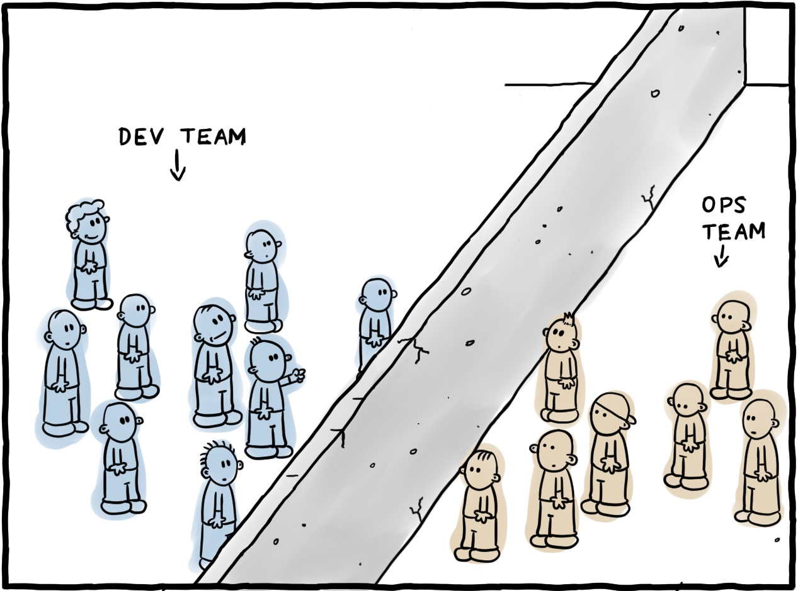
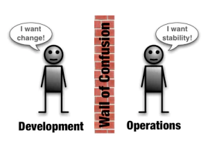
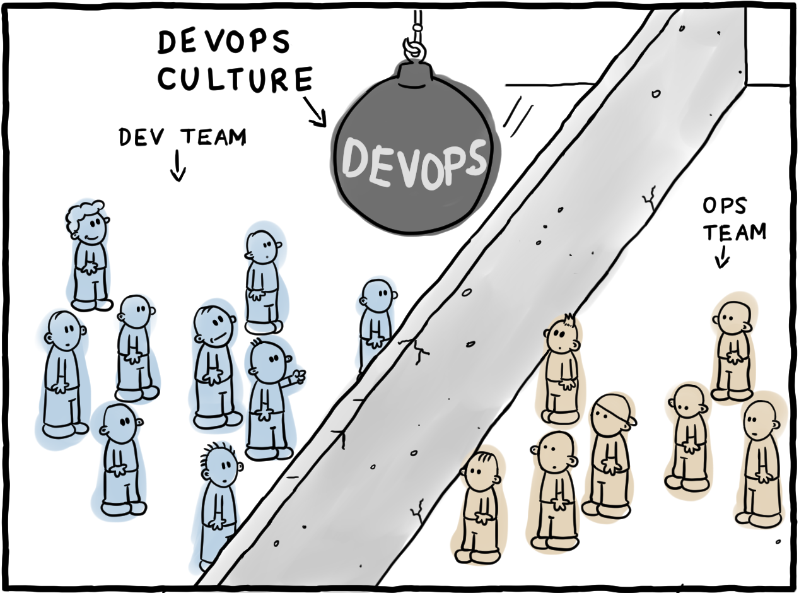
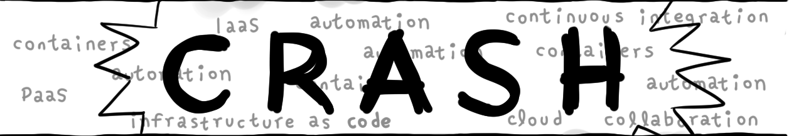
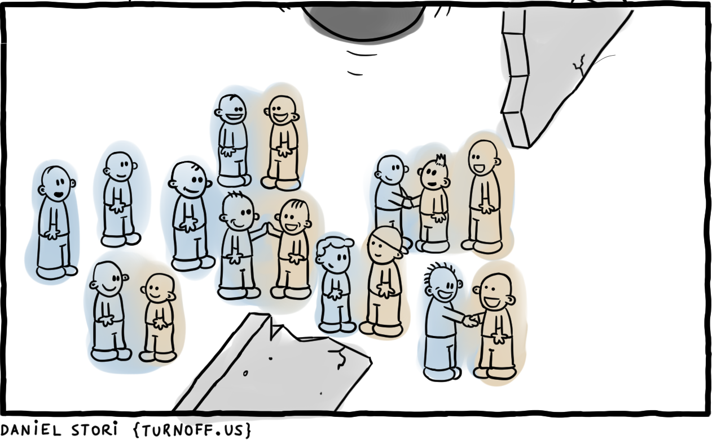
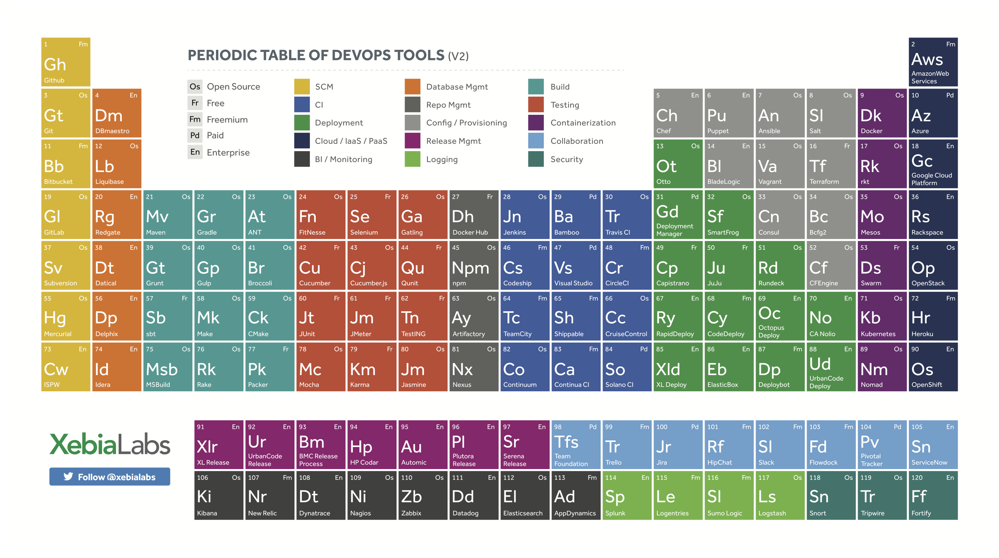
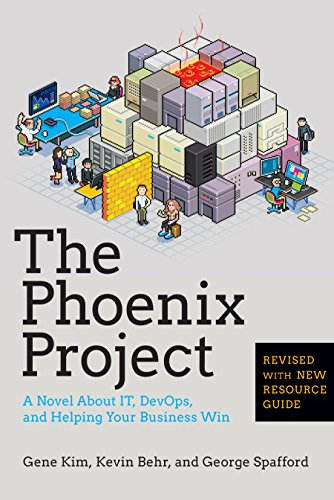
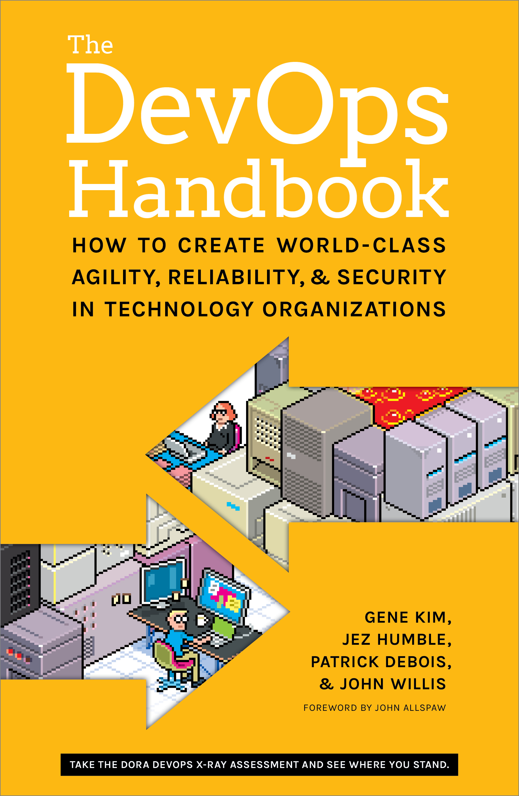
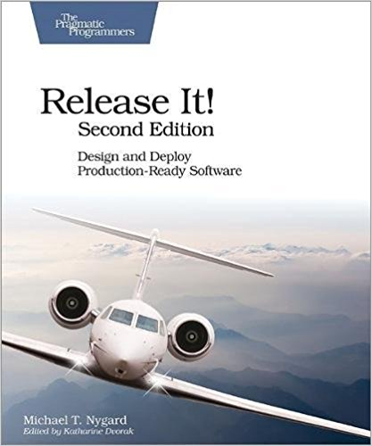
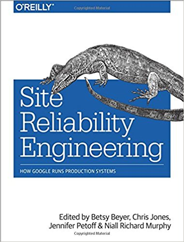

layout: true class: white-text name: cover background-image: url(images/devops.png) background-size: 50% background-position: center 20% --- layout: true class: divider name: divider background-color: #26546D --- layout: true class: divider name: sub-divider background-color: #70AD47 --- template: cover <div class="footer bottombox" style="background-color: #2C4B60;"> <h1>Introduction to DevOps</h1> <h3>Martin Fietz</h3> </div> <div class="footer bottombox"> <h1>Introduction to DevOps</h1> <h3>Martin Fietz</h3> </div> --- layout: true --- # Agenda 1. What it is & what it is not 2. Goals & Short History 3. The Three Ways 4. CALMS 5. Challenges 6. Resources --- class: center # Why? <font size="6">BLUF: <p>We are already doing it, <br>we might as well do it <strong>deliberately</strong></p> </font> --- template: divider # DevOps is *not* ... --- # DevOps is not... * a role/job title ("DevOps Engineer") * would be an issue for collaboration and end-to-end-responsibility * only (infrastructure) automation * just one aspect of many * getting rid of ops - "NoOps" * as development assumes more ownership and responsibility,<br> *Ops is more important than ever* * sysadmins who code --- # DevOps is not... (Cont'd) * DevOps teams * creates just another functional silo between dev and ops * knowledge gap * further concentrates responsibility * ownership of product? * basically release engineering --- template: divider # Devops is... --- class: center # DevOps Explained  --- template: sub-divider # Interlude: Dev vs Ops --- # Dev vs Ops <div style="text-align: center"> <br> <em><small>Source: ca.com</small></em> </div> --- # Dev vs Ops <table style="width:100%; border-spacing: 1em;"> <tr> <th>Dev</th> <th>Ops</th> </tr> <tr> <td>business priorities:<br>get innovation to users, fast</td> <td>protect business from disruption</td> </tr> <tr> <td>application performance</td> <td>application availability / stability</td> </tr> <tr> <td>end-user analytics</td> <td>infrastructure & application metrics</td> </tr> <tr> <td>code quality</td> <td>end user complaints</td> </tr> <tr> <td>code-level errors</td> <td>performance analytics</td> </tr> <tr> <td><strong>lack of operational mindest</strong></td> <td><strong>lack of development mindest</strong></td> </tr> </table> --- count: false # Dev vs Ops <table style="width:100%; border-spacing: 1em;"> <tr> <th>Dev</th> <th>Ops</th> </tr> <tr> <td>business priorities:<br>get innovation to users, fast</td> <td>protect business from disruption</td> </tr> <tr> <td>application performance</td> <td>application availability / stability</td> </tr> <tr> <td>end-user analytics</td> <td>infrastructure & application metrics</td> </tr> <tr> <td>code quality</td> <td>end user complaints</td> </tr> <tr> <td>code-level errors</td> <td>performance analytics</td> </tr> <tr> <td><strong>lack of operational mindest</strong></td> <td><strong>lack of development mindest</strong></td> </tr> </table> <p align="center"><br> <strong><font color="red">But, isn't the common ultimate goal to make customers happy?</font></strong> </p> --- class: center # DevOps Explained  --- class: center # DevOps Explained <p> </p> <p> </p> <p> </p>  --- class: center # DevOps Explained <p> </p>  --- # DevOps is ... > DevOps is just the agile principle, taken to the full enterprise. <div style="text-align: right">Rosalind Radcliffe</div> * a mindset or cultural movement * learning culture and practice * strategies that break down silos & facilitate collaboration * not actually "new" or revolutionary - but it does not claim to be * encourage ownership & accountability - "you build it, you run it" --- # Goals * shorter development & feedback cycles * faster time to market * improve mean time to repair (MTTR) * lower failure rates of new releases * eliminate technical debt and unplanned work * alignment with business objectives --- template: divider # A Short History --- # History * 2008: Andrew Shafer posted an idea for an agile infrastructure session at the Agile 2008 Conference. <br>Only a single person, Patrick Debois, showed up. * 2009: *10+ Deploys Per Day: Dev and Ops Cooperation at Flickr* presentation<br> This inspired Patrick to create his own conference * 2009 First DevOpsDays conference * 2011: DevOps goes mainstream<br>Before, movement still mainly fueled by individuals and open source tools * 2014: Large companies like Target, Nordstrom and LEGO adapt DevOps --- template: divider # The Three Ways --- # The First Way: Systems Thinking <div class="boxed" style="text-align: center">Business → Dev → Ops → Customer</div> *Improve work flow from left to right*, i.e. performance of the entire system * lower amount of Work in Progress (WIP) * WIP only creates value as finished product * faster flow will deliver value faster * remove constraints (person, technology, culture, process) --- # The Second Way <div class="boxed" style="text-align: center">Business ↔ Dev ↔ Ops ↔ Customer</div> **Enhance feedback loops from right to left** * both number of feedback loops and speed * stop if error is found and transmit as fast as possible to source * e.g. designing quality into product at earliest stage --- # The Third Way **Continuous experimentation and learning** * create culture where * constant experimentation and learning is encouraged * people acknowledge that way to mastery is through repetition and practice * take risks and learn from failures * controlled: risk is not too big (small WIP) and fast feedback on changes * ensuring to continually put tension into system to continually reinforce habits and improve --- template: divider # CALMS --- # CALMS <div style="display: table; margin-left: auto; margin-right: auto"> <p> <strong>C</strong> ulture<br><br> <strong>A</strong> utomation<br><br> <strong>L</strong> ean<br><br> <strong>M</strong> easurement<br><br> <strong>S</strong> haring<br><br> </p> </div> --- # Culture * shared responsibility * blameless post-mortem * failures as learning opportunities * honesty and openness * transparency * trust --- # Case Example: Culture at Netflix * Encourage independent decision-making by employees * Share information openly, broadly and deliberately * Are extraordinarily candid with each other * Keep only our highly effective people * adequate performers receive a generous severance package * Avoid rules * policy for travel, entertainment, gifts, and other expenses: "act in Netflix’s best interest" * vacation policy: "take vacation" * avoid over-correcting when freedom is abused *Source: https://jobs.netflix.com/culture* --- # Automation: Goals * save time * prevent defects * consistency & repeatability * self-service --- # Automation: Tools <div align="center">  </div> --- # Lean * focus on identifying value streams * eliminate waste: keeping everything minimal, yet useful; e.g. * small and frequent deployments * team size * continuous improvement, e.g. * regular retrospectives * A/B testing * embracing failure * absorb, recover, learn → anti-fragility * postmortems focus on where processes fell down and how to strengthen them --- # Measurement * track metrics and use information to drive feedback loops and objective, blameless decision making * end-to-end visiblity for applications, infrastructure, and digital business as a whole * helps to demonstrate to positive impact of DevOps on business **Examples** * Business Success: Conversion rate, avg revenue per user * Customer Experience: response time of key business transactions, customer satisfaction * Application Performance: Uptime, response times, resource utilization * Speed: lead time for changes, mean time to resolution * Software Quality: error rates, outstanding bugs --- # Sharing * exchange ideas across teams * sharing tools, discoveries and lessons * find people with similar needs and collaborate to elinimate duplicate work * conference participation: motivation and information --- template: divider # Challenges --- # Challenges * culture change * legacy systems & infrastructure * tool turbulance * cross-functional teams * share resources: making time for non-product Work * constant context switching * "no one can serve two masters" * resistance to change * process challenges: with power comes great responsibility --- template: divider # Resources --- # Resources <div style="text-align: center">   </div> --- # Resources (Cont'd) <div style="text-align: center">   <img src="images/continuous-delivery.jpg" height="200"> </div> <p> </p> * Weekly Devops Email Newsletter: http://www.devopsweekly.com * Awesome Devops: https://github.com/AcalephStorage/awesome-devops --- <!-- CONTEND END -->